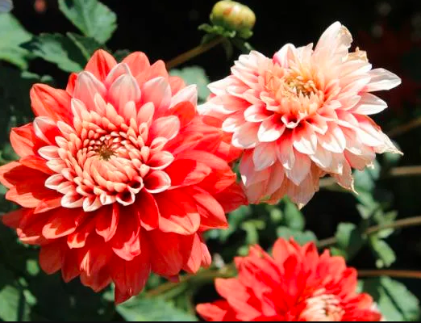
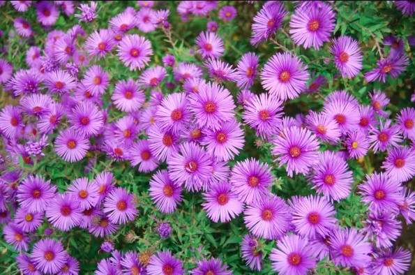
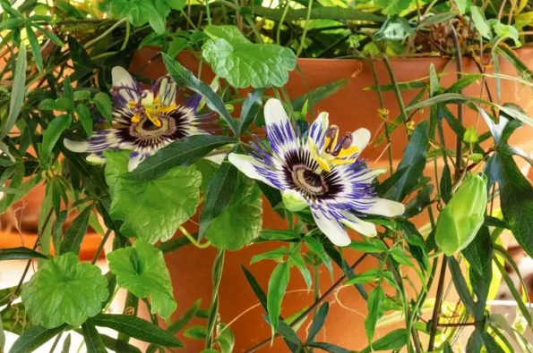
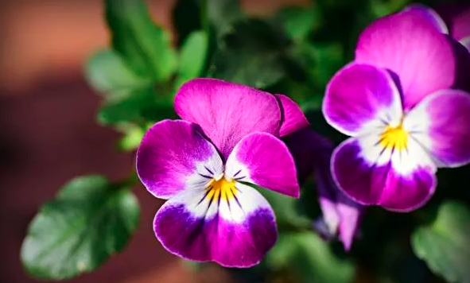

Esta planta procedente de Sudáfrica es una de las plantas de exterior en maceta resistentes al sol. Es más, sus flores también aguantan perfectamente la luz solar directa. Las flores de la gazania cuentan con colores como los naranjas, amarillos, rojos, blancos e incluso rosados. Además, requiere muy pocos cuidados y aquí puedes conocerlos: Cuidados de la gazania.
Con una larga floración que va desde principios de verano hasta casi finales de otoño, la dalia es una de las plantas para patios que necesitan además de sol, estar protegidas del viento, de ahí que se utilicen como punto de decoración en estos lugares acotados. Sus flores pueden ser desde rojas, rosadas e incluso blancas. Además, son un tamaño considerable por lo que tienen un gran valor ornamental.
Estas margaritas perennes son plantas de exterior resistentes para terrazas y que llenan de color cada rincón y durante todo el año. La planta áster soporta bien la exposición continuada al sol y no necesitan de muchos cuidados para conseguir una floración continuada y espectacular.
Originaria de Oceanía y Asia y conocida también como flor de la pasión. Es una de las plantas más valoradas por sus bellas flores de colores vivos y por llegar a alcanzar una altura de hasta 7 metros. Lo único que necesitas saber es que no debes regarla demasiado y mantenerla siempre en una zona de temperatura suave
Esta planta, a pesar de no ser muy resistente, sorprende por su floración más que llamativa durante el otoño y gran parte del invierno. El aspecto que conseguiremos en nuestro jardín, terraza o balcón es el de una extraña, pero permanente primavera gracias a la coloración de sus flores. La planta de los pensamientos no necesita de muchos cuidados, por lo que es perfecta para principiantes en jardinería.